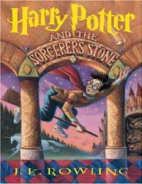

HPSehrgarlar olamiga ilk qadam qo'ygan yetim bola Harry Potter haqidagi mashhur fentezi roman.
Harry Potter, oddiy bola ekanligini o'ylab yurgan paytda, o'zi mashhur jodugar va afsungar ekanligini bilib oladi va Xogvarts afsungarlik maktabiga yo'l oladi. U yerda u yangi do'stlar orttiradi va ota-onasining o'limiga sabab bo'lgan qora kuchlarga qarshi kurashishni boshlaydi. Bu sehrli dunyo va sarguzashtlarga boy mashhur asarning birinchi qismidir.